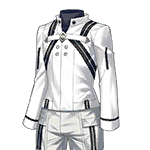

-
- ★☆★
- 引用本站的翻譯請註明本站名稱或網址
本站不像其他網站可以分工合作統整資料
而是獨自一人憑藉熱忱製作分享
引用本站的翻譯請註明本站名稱或網址
-
- ★☆★
- 本週日版御主任務(1/10～1/16)
任務 獎勵 No.1：通過所有本週的御主任務 3No.2：施行30次友情點數召喚 3No.3：擊倒任15名『Saber』『Rider』職階的敵人(從者及一部份Boss除外) 3No.4：擊倒任15名『Archer』『Caster』職階的敵人(從者及一部份Boss除外) 3No.5：擊倒任15名『Lancer』『Assassin』『Berserker』職階的敵人(從者及一部份Boss除外) 3No.6：通過5次任意關卡 3No.7：通過10次任意關卡 3
- ★☆★
- 【重要】Ver.1.11.0以後，關於從推薦環境以外的遊玩
- 1/12
- 艾梅洛Ⅱ世閣下事件簿×Fate/Grand Order聯動活動「復刻版:淑女・萊涅絲事件簿 -Plus Episode-」
| ・關於在「迦勒底・衛星基地台 2021-2022」靜岡會場發表的新情報 | |||
| ・1/6遊戲更新(17:00實施) | ・1/10遊戲更新(17:00實施) | ・1/12維修公告(12:00實施) | |
◆從者◆ ◆活動相關◆
- 1/1
- 2022年新年宣傳活動！
◆從者◆
・新增從者

◆概念禮裝◆
◆指令紋章◆
◆隱藏數值◆
・新增特性：〔獸科從者〕(修正遺漏赤兔馬的邏輯錯誤)
- 12/22
- 期間限定活動「非靈長生存圏 通古斯卡聖域」
◆從者◆ ◆概念禮裝◆ ◆御主相關◆
・新增魔術禮裝

|
|